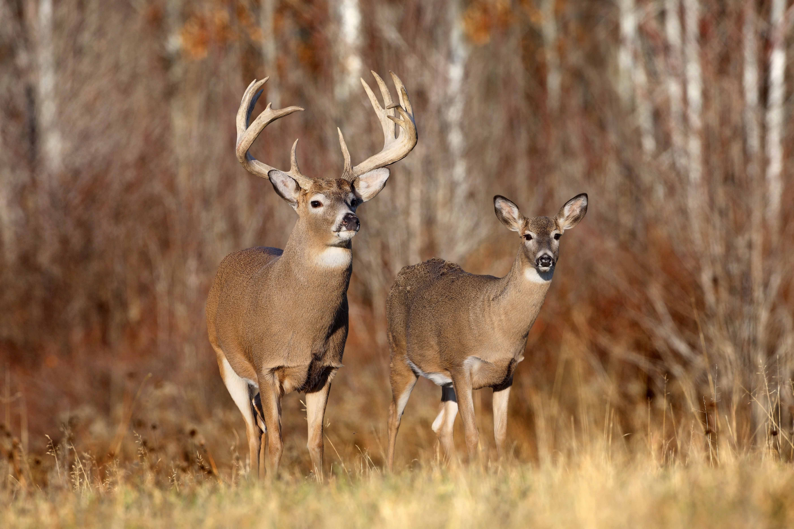

Dear
Deer live in a variety of biomes, ranging from tundra to the tropical rainforest. While often associated with forests, many deer are ecotone species that live in transitional areas between forests and thickets (for cover) and prairie and savanna (open space). The majority of large deer species inhabit temperate mixed deciduous forest, mountain mixed coniferous forest, tropical seasonal/dry forest, and savanna habitats around the world. Clearing open areas within forests to some extent may actually benefit deer populations by exposing the understory and allowing the types of grasses, weeds, and herbs to grow that deer like to eat. Access to adjacent croplands may also benefit deer. Adequate forest or brush cover must still be provided for populations to grow and thrive.